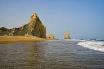
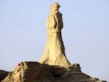

Kund Malir is a beach in Balochistan, Pakistan located in Hingol National Park, about 150 kilometers (93 mi) from Zero-Point on Makran Coastal Highway. It is located 236.8 kilometers (147.1 mi) west of Karachi, the largest city in Pakistan. The drive between Kund Malir and Ormara is considered to be scenic. The area is part of Hingol National Park, the largest in Pakistan.

It is located about 220 km from Karachi at Lasbela district, Balochistan, Pakistan. The beach is home to a curious rock formation called Bujih Koh — a steep cliff rising from the sand entirely on its own. It's separated from the cliff wall that stretches along the coast straddling the beach between its rocky embrace and the sea. The entire beach is home to a healthy colony of crabs. Another interesting feature about this beach is that there are some caves on the cliffs. The beach is an entirely different entity at night. On full-moon nights, when the rays strike the surf of the incoming waves, they almost seem to glow.
The Princess of Hope is a natural rock formation in Pakistan of the type known as a hoodoo or "fairy chimney" and which could fancifully be construed as resembling a crowned and skirted female figure looking toward the horizon. It is situated approximately 190 km (120 mi) from the financial hub of Karachi, Pakistan and approximately 717 km (446 mi) from the provincial capital, Quetta.
Ziarat is a city in the Ziarat District situated in the Balochistan. It is 130 kilometres (81 mi) from the capital city of Eastern Balochistan Quetta. It was established as a district on 1st July 1986, before then it was part of Sibi district. The Quaid-e-Azam Residency is in the valley, where Quaid-e-Azam spent a few of his most memorable days.